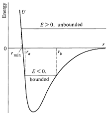

In uniform circular motion, the gravitational force acts as the centripetal force needed to keep a satellite in orbit. The two are equal:
After simplifying and solving for the orbital speed:
Orbital Speed: Only depends on the central mass \(M\) and radius \(r\).
Orbital Period:
Total Mechanical Energy:
The total mechanical energy determines whether an orbit is bound or unbound.
Bound orbits occur when an object, such as a satellite, remains gravitationally tied to a central body like a planet or star. In this case, the total mechanical energy of the system is negative, meaning the object does not have enough energy to escape the gravitational pull. Bound orbits are typically elliptical or circular, and the object continuously moves around the central body without drifting away. In contrast, unbound orbits happen when the object has enough energy to overcome the gravitational attraction and escape into space. Here, the total mechanical energy is zero or positive, and the object follows a parabolic or hyperbolic trajectory. Unlike bound orbits, unbound objects move away indefinitely and do not return to orbit the central body. This distinction between bound and unbound orbits depends on the balance between kinetic energy and gravitational potential energy.

- Bound orbit: Negative total energy, typically circular or elliptical
- Unbound orbit: Zero or positive total energy, escape trajectory